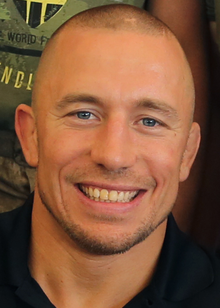

Georges St-Pierre fighter profile
Georges St-Pierre born May 19, 1981 is a retired Canadian professional mixed martial artist. He is widely regarded as one of the greatest fighters in mixed martial arts (MMA) history. He is a two-division champion in the Ultimate Fighting Championship (UFC) having won titles in the welterweight and middleweight divisions.
St-Pierre is a three-time former UFC Welterweight Champion, having won the title twice and the interim title once between November 2006 and April 2008. St-Pierre was ranked as the #1 welterweight in the world for several years by Sherdog and numerous other publications. In 2008, 2009 and 2010 he was named the Canadian Athlete of the Year by Rogers Sportsnet. Fight Matrix lists him as the top MMA Welterweight of all time and most accomplished fighter in MMA history.
He retired as the reigning Welterweight Champion on December 13, 2013, having held the record for most wins in title bouts and the second longest combined title streak in UFC history (2,204 days) while defending his title nine consecutive times. He returned to the Octagon in November 2017 at UFC 217, when he defeated Michael Bisping by submission to win the Middleweight title, thus becoming the fourth fighter in the history of the UFC to be a multi-division champion.